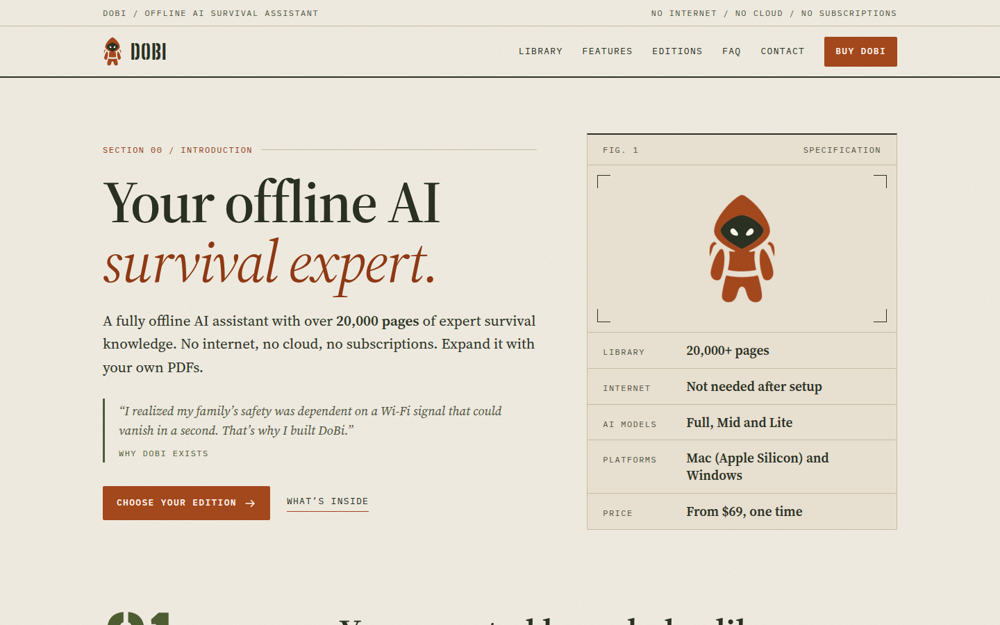
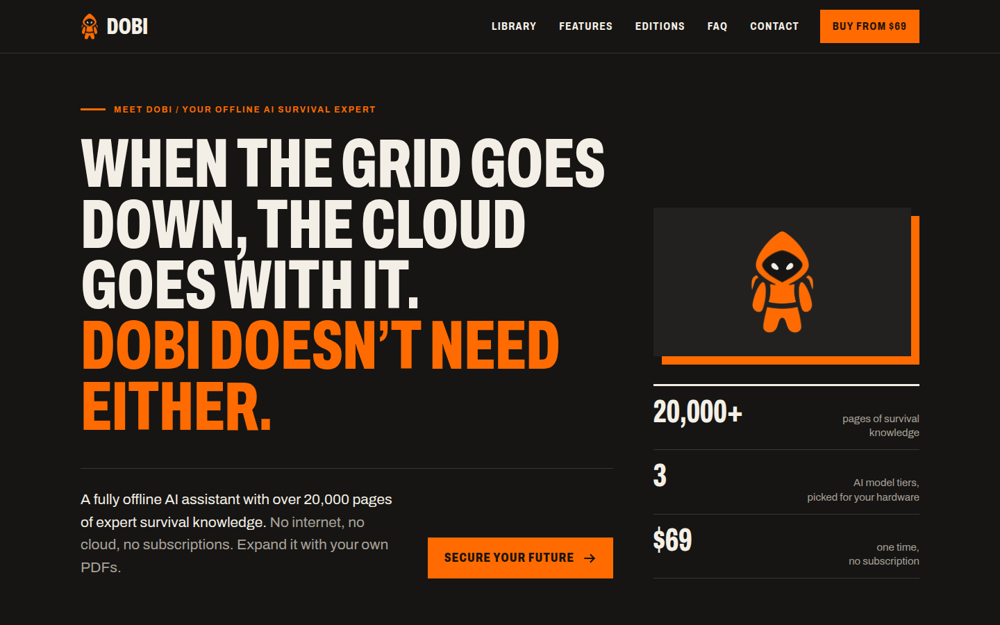
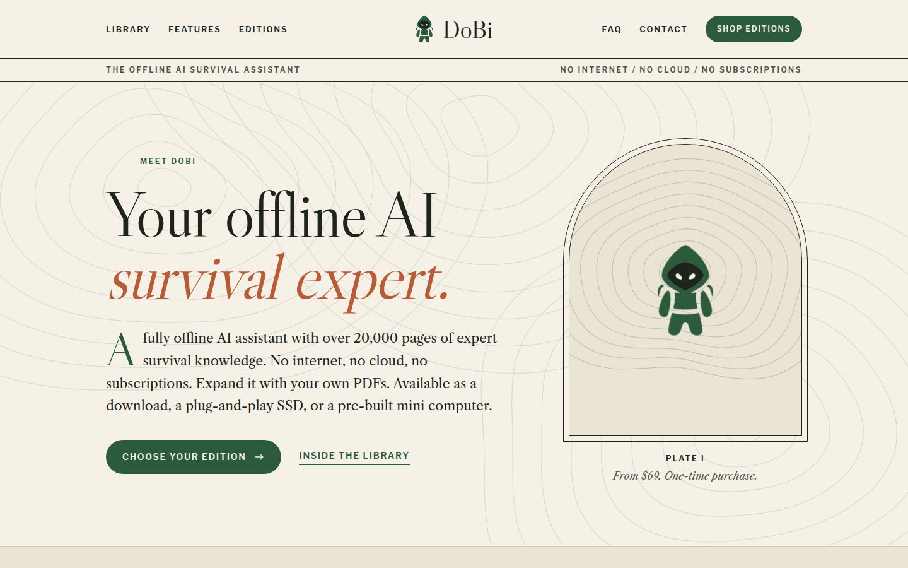
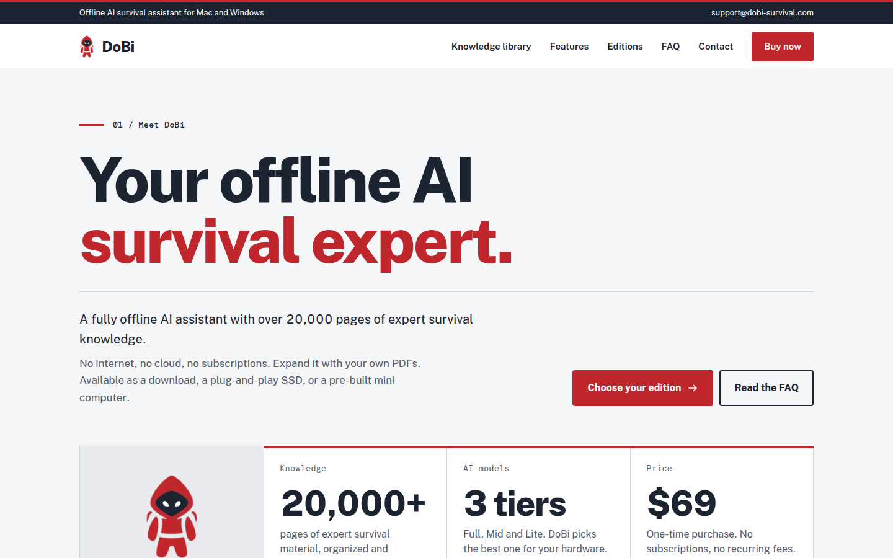

A. Field / field manual
Split hero with a spec card, numbered chapters with a sticky margin column, and an order-form edition table. Source Serif 4 with IBM Plex Mono labels and stencil numerals, on warm paper with a fine grain.
Mockups only. Each page covers the nav, hero, knowledge library, features, editions and footer, using copy and prices from the live site. Not linked from the site and kept out of the sitemap.

Split hero with a spec card, numbered chapters with a sticky margin column, and an order-form edition table. Source Serif 4 with IBM Plex Mono labels and stencil numerals, on warm paper with a fine grain.

Asymmetric hero with a giant condensed headline and a stat rail, full-bleed orange bands, and an SSD-first edition slab. Archivo at narrow and normal widths, square corners throughout.

Centered masthead, an arched plate for the mark, a two-column catalog index and catalog-style edition listings. Libre Caslon with Libre Franklin small caps and a subtle contour-line texture.

Full-width headline over a four-cell fact strip, a tabular library grid, a feature data sheet and a side-by-side edition comparison table. Public Sans with DM Mono codes and a red rule system.
New marks are being designed separately, so no direction depends on the current hooded figure. Each page has one swappable mark: <img class="brand-mark" src="logos/<direction>.png">, used in the nav and the hero and sized only by --mark-size. The current figure is there as a stand-in, recolored per palette by mockups/recolor-logos.py.